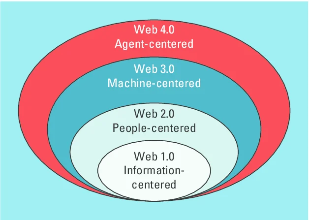

Evolution of the Web
Category: Web History & Future Trends
Introduction
The World Wide Web has transformed from a simple collection of text documents into a highly sophisticated, intelligent ecosystem. This evolution is typically categorized into four distinct "generations."
The Evolution Roadmap
Each stage of the web is defined by how users interact with content and how machines process information.

- Web 1.0 (The Information Web): The 1990s "Read-Only" web. Static HTML pages where users consumed content without much interaction.
- Web 2.0 (The Social Web): The mid-2000s "Read-Write" web. Introduction of social media, blogs, and Web Applications where users create content.
- Web 3.0 (The Semantic Web): The "Read-Write-Execute" web. Data is structured so machines can understand it, focusing on decentralization and AI.
- Web 4.0 (The Symbiotic Web): The future "Intelligent" web. This stage involves seamless interaction between humans and machines (AI), where the web acts as an autonomous personal assistant.
Comparison Table
| Generation | Era | Core Tech | User Role |
|---|---|---|---|
| Web 1.0 | 1990-2000 | Static HTML | Consumer |
| Web 2.0 | 2000-2010 | AJAX, Javascript | Creator |
| Web 3.0 | 2010-2025 | Blockchain, AI | Owner |
| Web 4.0 | 2025+ | Neural Networks, IoT | Integrated User |
Web 4.0: The Symbiotic Future
Web 4.0 represents the ultimate integration of the web into our daily lives. It is often called the "Act-Execute" web because it doesn't just provide info—it performs tasks autonomously. Imagine a web that knows you are tired and automatically orders your favorite dinner and dims your smart lights before you even ask.